1. Macroevolutionary questions
2. Rates of evolutionary change
3. Phylogenetic niche conservatism
4. Rates of diversification and species selection
5. Niche construction
6. Complexity
- What distinguishes macro- from micro-evolution?
- Is macroevolution a process or pattern?
- Is evolution predictable, or contingent on chance events?
- What methods are used to study evolution?
“Scale and hierarchy must be incorporated into a conceptual framework for the study of macroevolution. Expansion of temporal and spatial scales reveals evolutionary patterns and processes that are virtually inaccessible to, and unpredictable from, short-term, localized observations” (Jablonski 2006).
Macro- is not just microevolution over long time scales:
“Empirical extrapolation appears to break down, for example, in the mismatch between the demonstrated potential of most populations for rapid net change and the prevalence of net morphological stasis in many lineages over long time-scales”
Most evolution occurs gradually, and many examples are well documented in the fossil record, including the emergence of new highly distinct morphological clades, such as mammals.
Most transitional forms are now extinct, such that in the absence of a fossil record, we might think a rapid shift occurred between mammals and their closest non-mammal relatives.
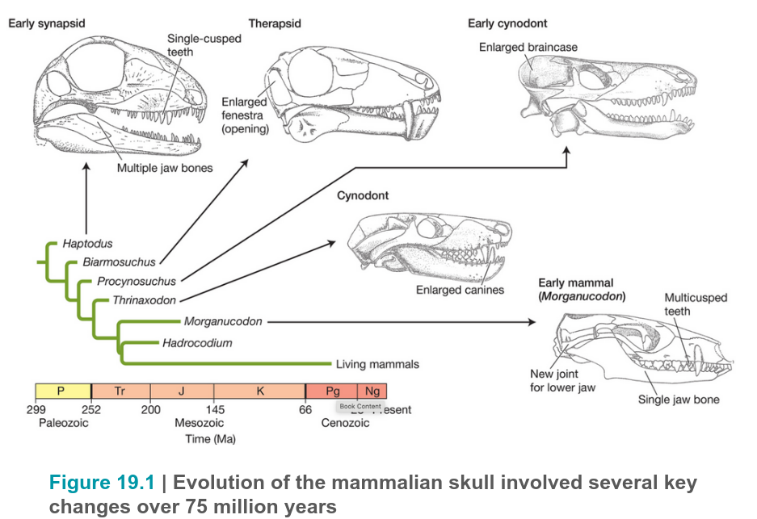
The fossil record is largely characterized by patterns of stasis: long periods during which little change occurs.
Does this reflect a true pattern of evolution, or is it a result of the spotty fossil record?
Eldredge and Gould (1972) argued for punctuated equilibria: that stasis really exists for longer periods of time, interrupted by the rapid shifts from one equilibrium to another. They argued founder speciation was common.
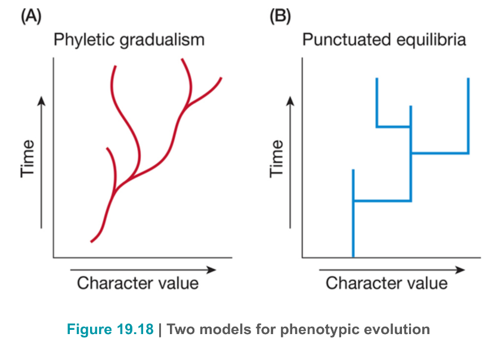
Early evolutionary theorist argued that large evolutionary changes occurred frequently by “systemic mutations” of large effects, including chromosomal changes that would give rise to highly altered creatures. While most new forms would be highly disfavored but some “hopeful monsters” might survive. This has been strongly rejected in modern theory, where the prevalence of small changes and mostly small effect mutations is widely recognized.
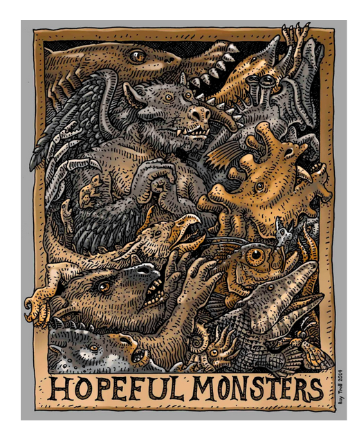
Rates vary greatly among traits and among lineages. Counter-intuitively, the longer amount of time over which morphological change is measured in a lineage the lower its rate of change (amount of change / time). This is most likely because of frequent reversals in the direction of change, such that despite many small changes, it appears to remain near the same mean. This suggests most observed changes in contemporary studies are temporary, and that larger changes between species occur much more rarely.
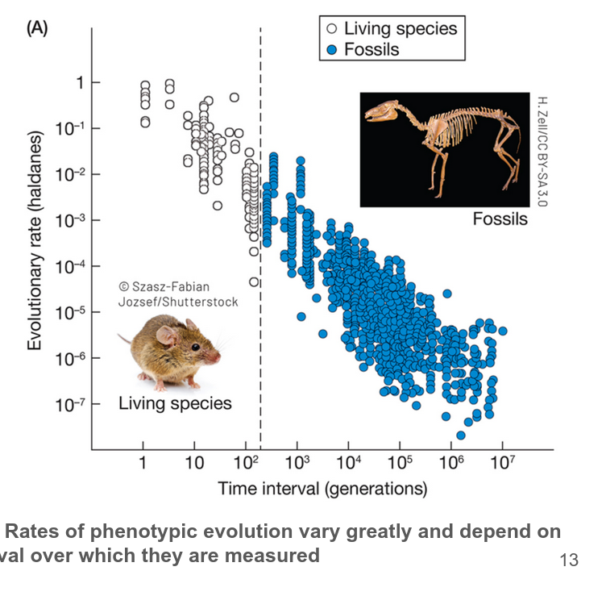
The apparent discrepancy between the slow rates of phenotypic evolution measured in the fossil record over geological timescales and the fast rates of evolution observed in populations at the present time.
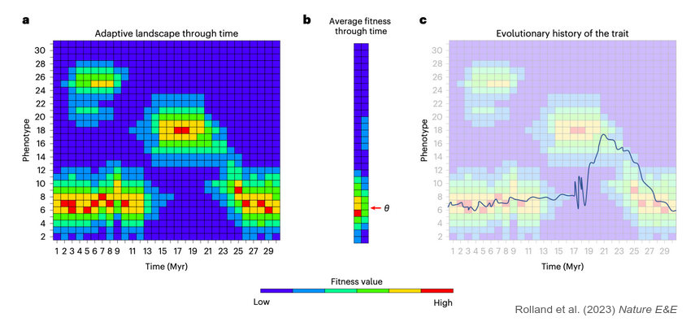
Speciation generally involves a three-step process: range expansion, range fragmentation, and the development of reproductive isolation between spatially-separated populations. Speciation relies on cycling through these three steps and each may limit the rate at which new species form. Ecological interactions between species and the resources available to them may place biotic limits on the rate of speciation over time - leading to a slow-down as niches become filled.
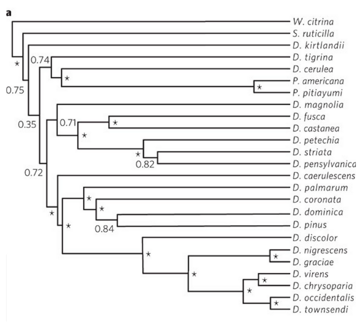
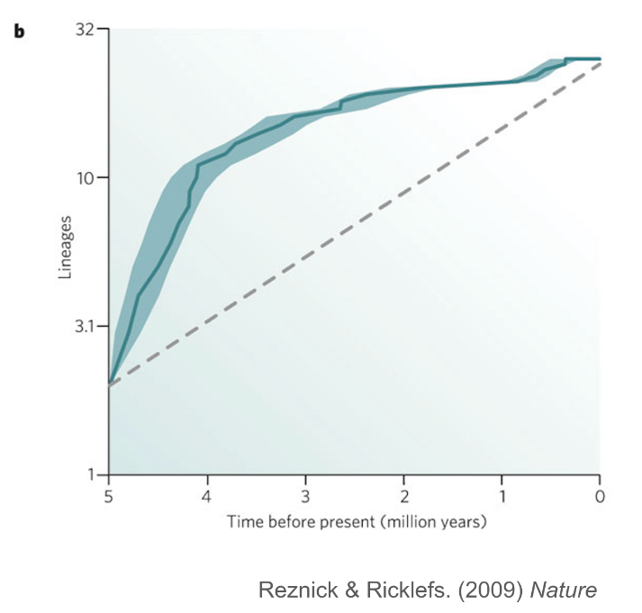
What does it mean to “fit a model to the data” in macroevolution? How can we test macroevolutionary hypotheses? In Gould’s day the evidence for punctuated equilibrium was relatively weak. Many argued that what looked like stasis to one person looks like change to another, and vice versa. Today a more rigorous statistical hypothesis testing framework exists.
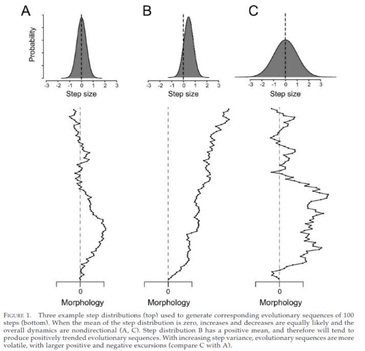
What is the probability that a population with trait value X at time 0
will evolve to trait value Y at time t under a specific evolutionary model?
- Brownian motion (random walk)
- Ornstein-Uhlenbeck (optima/selection)
What is the probability of moving from state Xo to state Xt (total change Wt) after some amount of time t?
We can model Brownian motion as the effect of many independent small changes, up or down, each generation.
From the central limit theorem: the sum of a set of independent and identically-distributed random variates from a probability distribution
(with finite mean and variance) approaches a normal distribution.
Wt = Xt - Xo = N(0, t)
A Brownian motion model can thus be defined by two parameters:
mean (mu) and variance (sigma-squared).
The expected trait value after T generations of change under a brownian motion model is the same value that is started at: it predicts zero change to the mean.
The variance of the trait value after T generations of change increases linearly with each generation of evolution: it allows for an observation to deviate further from the mean.
Wt = Xt - Xo = N(0, t)
Brownian process: In a unit of time the expected amount of change is equal to the variance. Randomly change up or down in each unit of time.
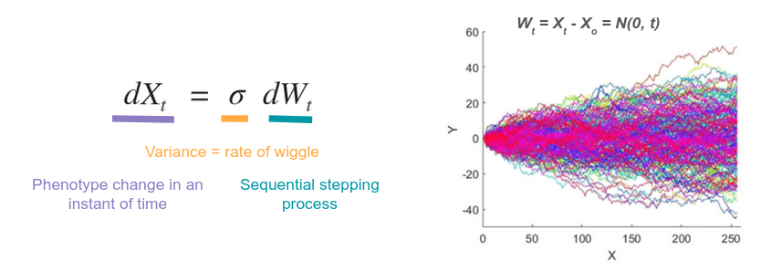
What is the probability of moving from state Xo to state Xt (total change Wt) after some amount of time t?
We can model OU as occurring in addition to Brownian motion. Thus, we many independent small changes occur, up or down, each generation, but there is also a trend towards an optimum.
This can be modeled as a “rubber-band” model, selection towards the optimum is stronger the further the mean is away from it.
Brownian process: In a unit of time the expected amount of change is equal to the variance. Randomly change up or down in each unit of time.
A OU model model is defined by four parameters: starting value (w), optimum (mu), variance (sigma2), selection strength (theta).
The expected trait value after T generations of change under an OU model
is towards the optimum, relative to the starting point, depending on
how much time has passed, and the relative strength of selection and drift.
An OU model with selection=0 is equal to a Brownian motion model. This can
be rejected using information theory (e.g., AIC) if it doesn't improve fit.
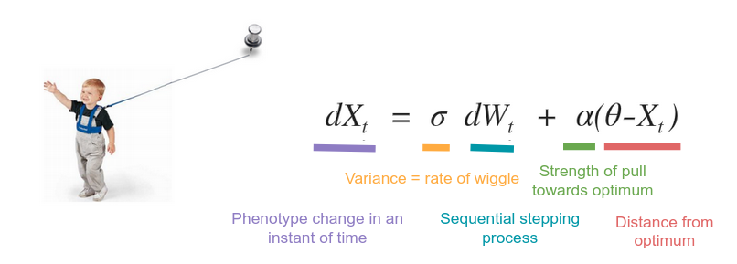
To test for evidence of selection Hunt (2011) developed a framework that allowed comparing drift and selection hypotheses on equal footing. Compare Brownian (2 parameter) to OU (4 parameter) models using AIC.
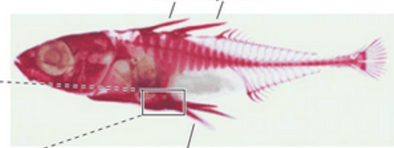
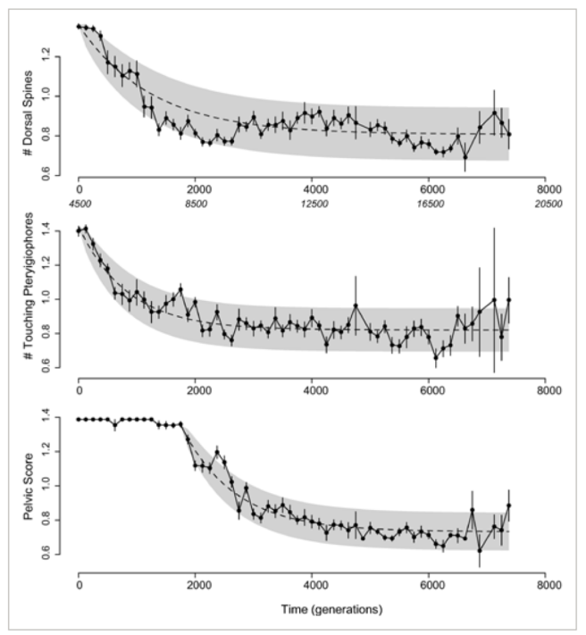
These same Brownian and OU type models can be applied to data on phylogenies. "How likely are these trait distributions on the tips of the tree given this model of evolution?" Do patterns of divergence between species deviate from expectations of genetic drift (increasing variance with time since divergence)? Or do models with adaptive optima fit better?
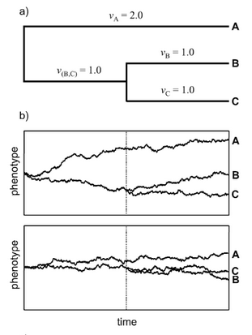
- Ancestral state reconstruction under Brownian
- Ancestral state reconstruction under multi-state OU
- Estimating multiple optima under OU
- Testing for correlated evolution of multiple traits
Model transitions between discrete character states using a Markov model. "What is the probability of observing these states at the tips given this model of transitions through time along the branches?"
Biogeography.
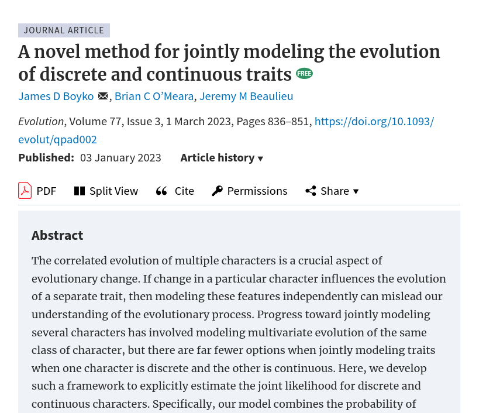
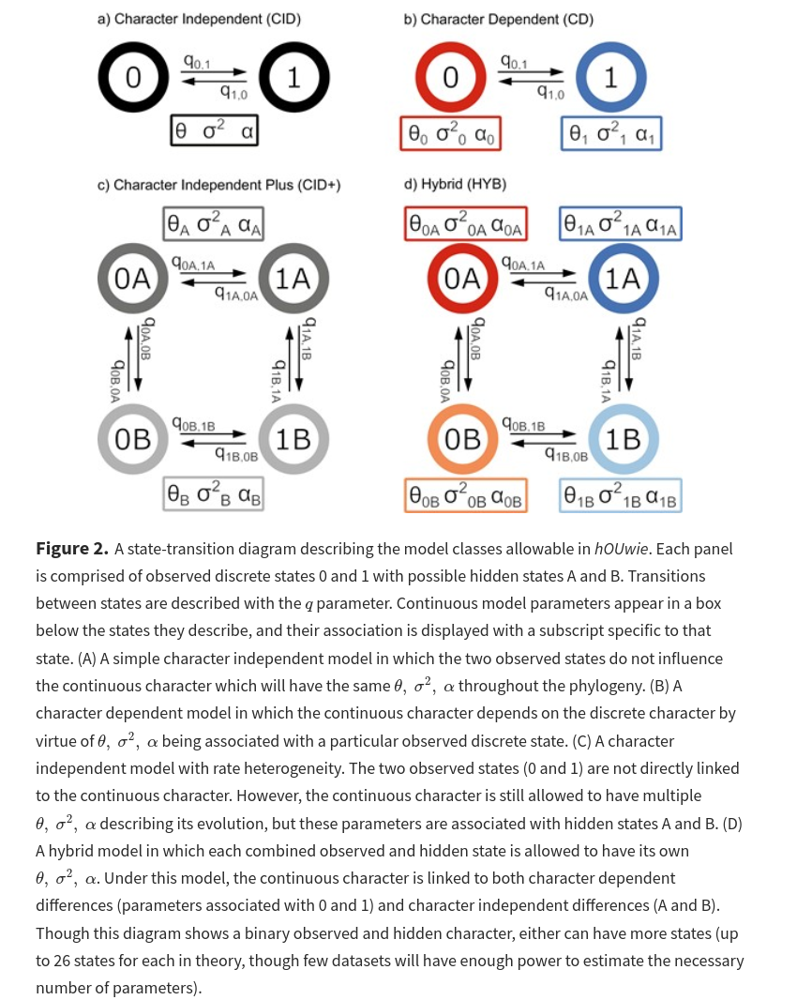
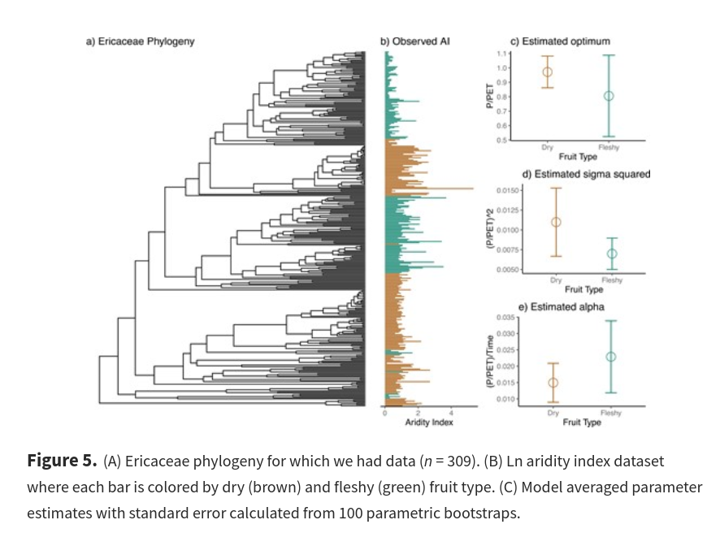
A trait that increases the rate of diversification (speciation - extinction). But how to detect a shift in diversification?
Sister clade comparisons. Given the same amount of time to diversify, does clade A have significantly more species than clade B? Limited statistical power.
Given a binary trait on a phylogeny, do lineages in state A have higher diverification than those in state B? If so, this can also improve ancestral state reconstruction. More statistical power if more transitions are observed on the tree.
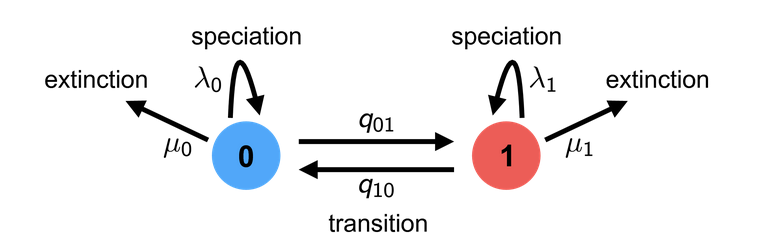
Given a binary trait on a phylogeny, do lineages in state A have higher diverification than those in state B? If so, this can also improve ancestral state reconstruction. More statistical power if more transitions are observed on the tree.
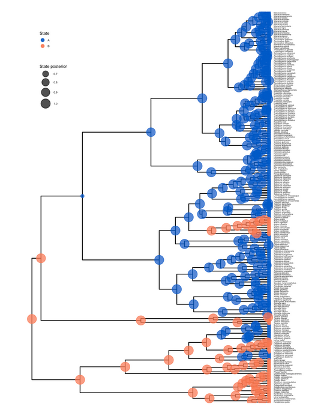
Given a binary trait on a phylogeny, do lineages in state A have higher diverification than those in state B? If so, this can also improve ancestral state reconstruction. More statistical power if more transitions are observed on the tree.
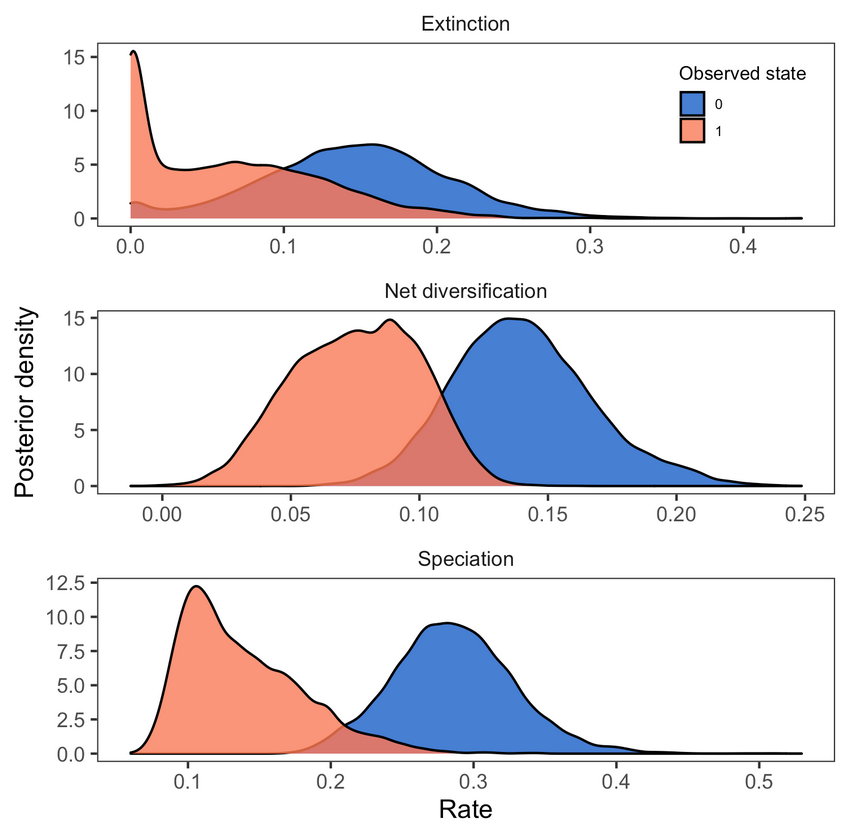
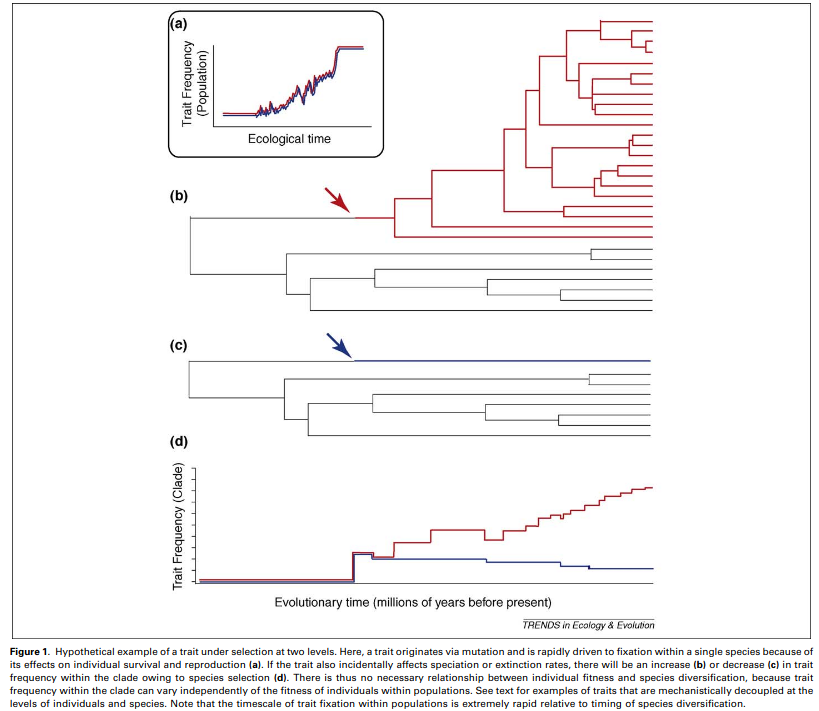